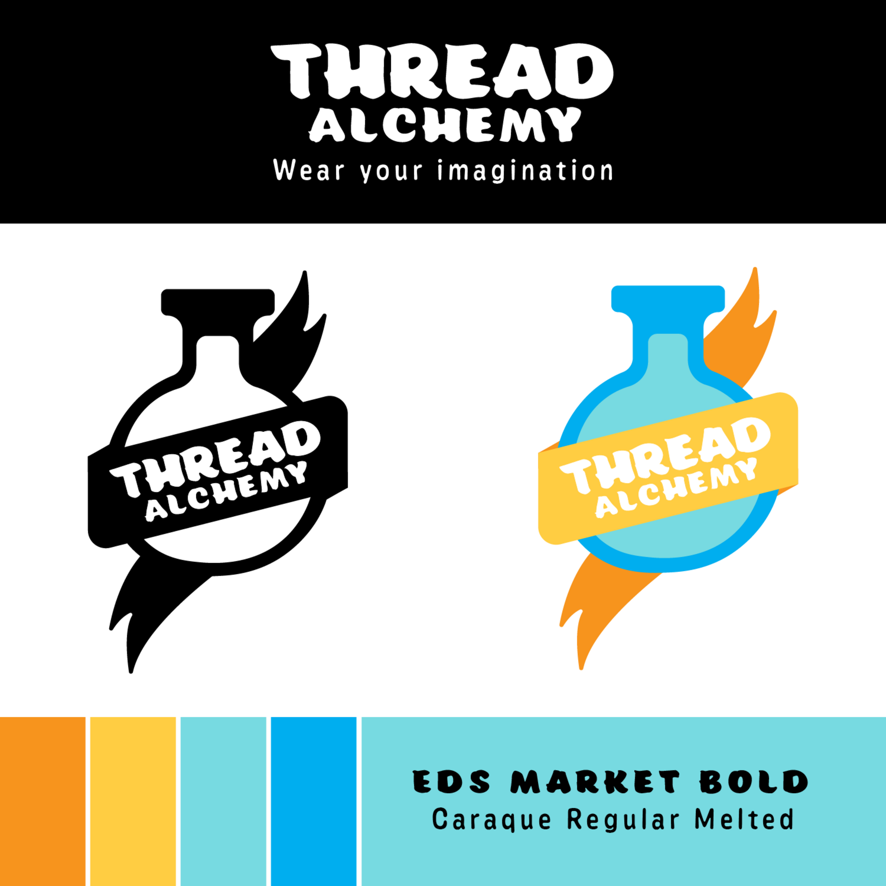
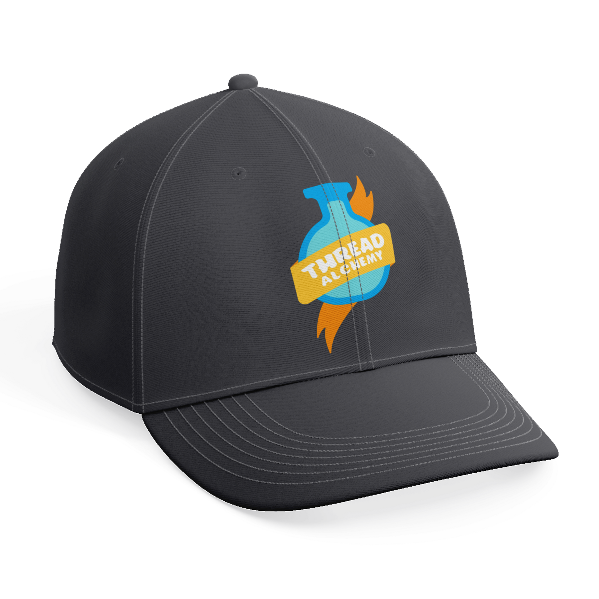
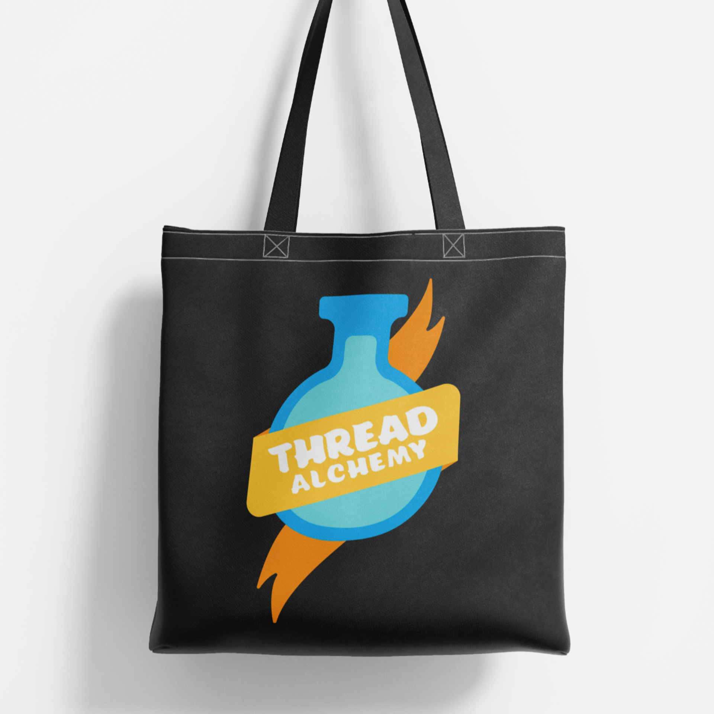
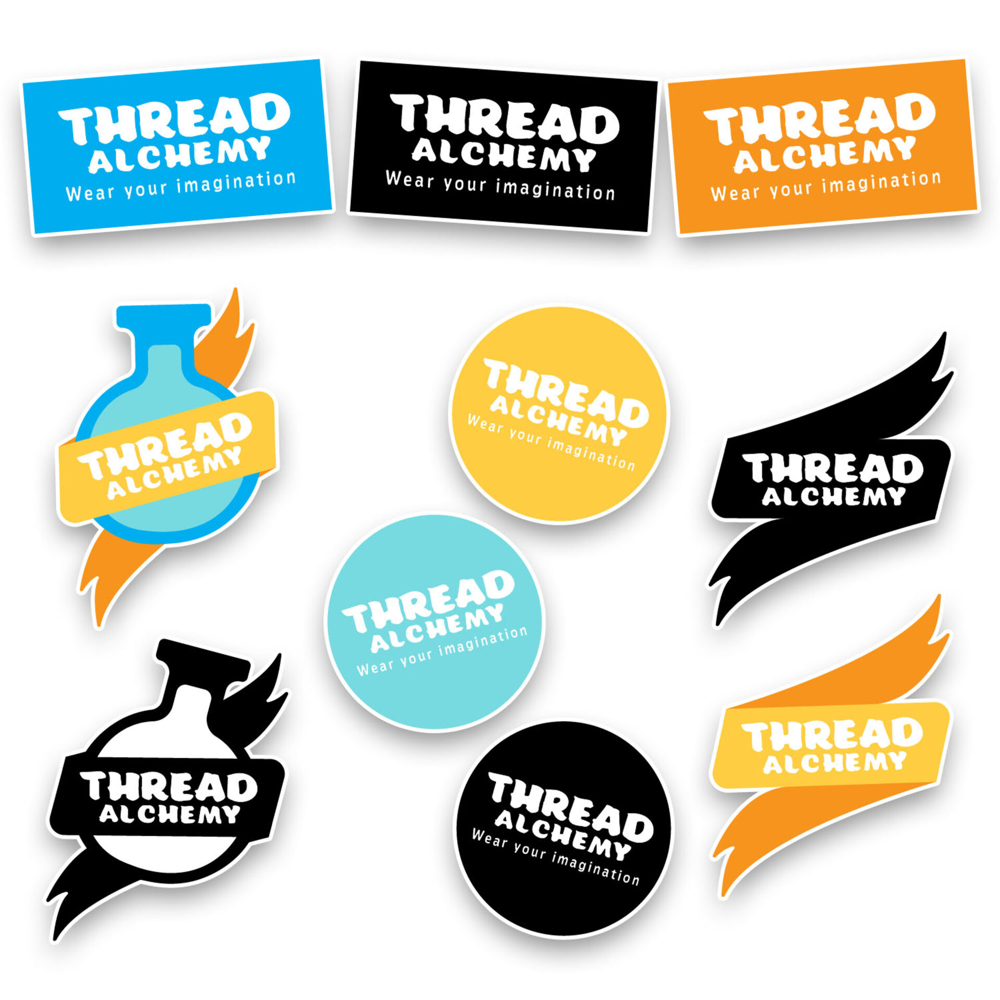
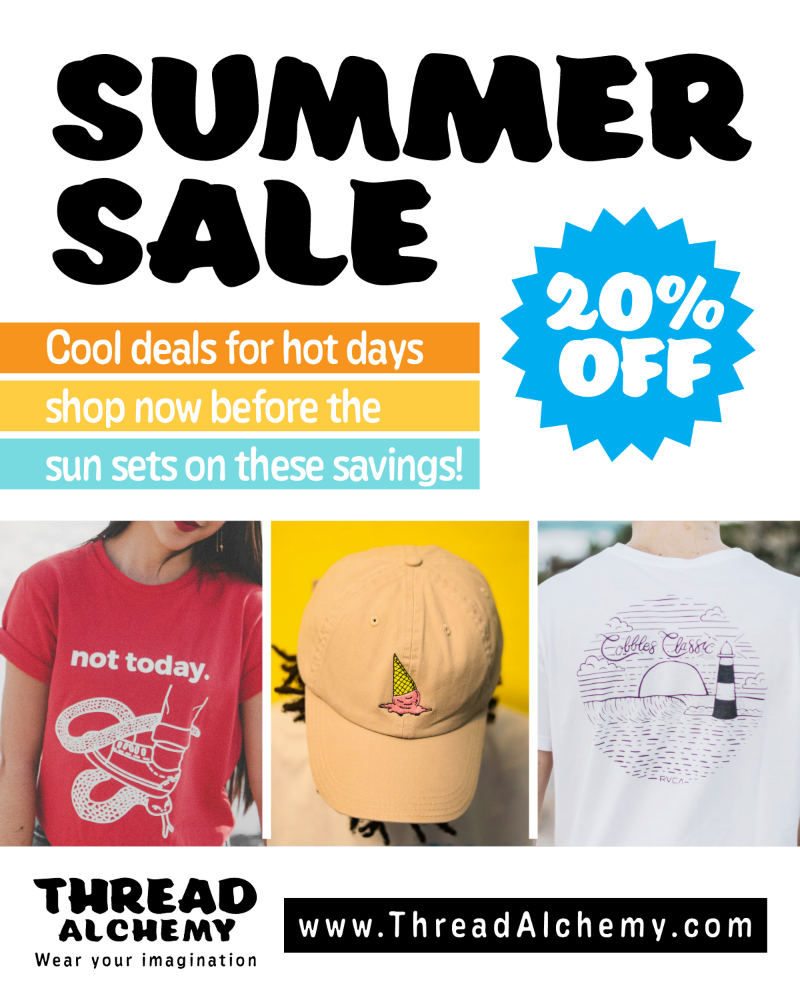
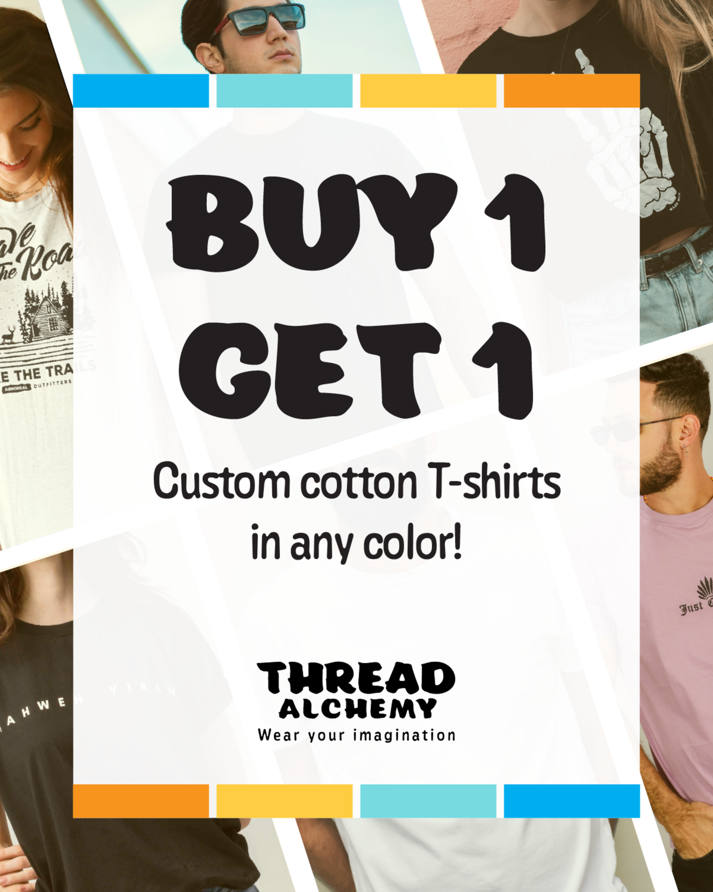
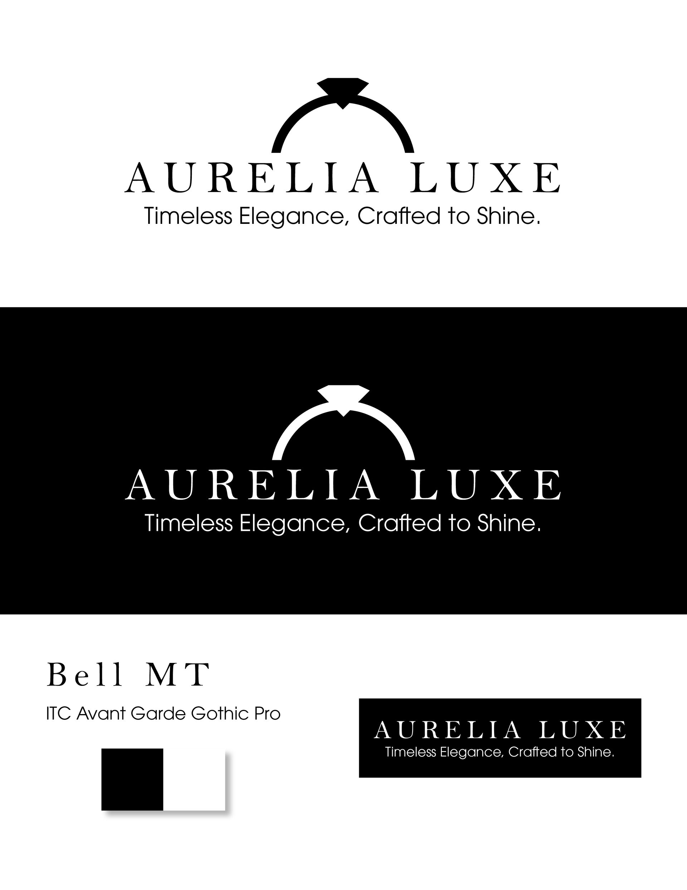
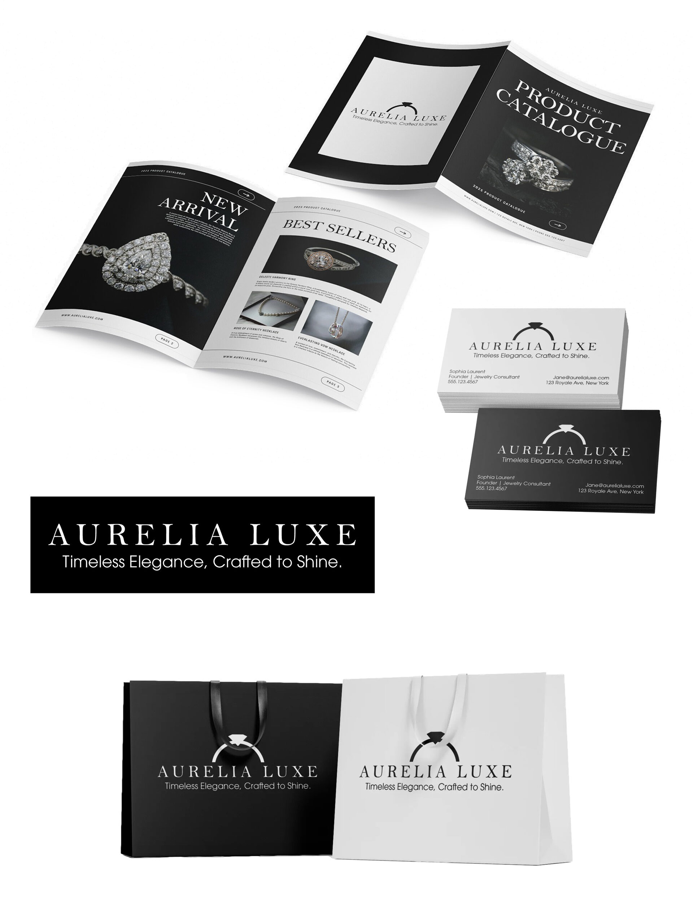

Brand Explorations
Brand identity, typography, and mockup design practice
These brand explorations were created as independent skill development exercises to strengthen visual identity design, typography control, and mockup composition.
Thread Alchemy
Brand Intent: An edgy yet artsy custom apparel shop encouraging self-expression. Motto: "Wear Your Imagination."
Logo
Variations designed for apparel, merchandise, and social media branding.
Brand System
- Colors: Bold Orange, Golden Yellow, Light Beachy Blue, Cyan
- Typography: EDS MARKET BOLD (display), Caraque Regular Melted (subheading)
- Mood: Playful, creative, welcoming, artsy

>Mockups
Hat, tote bag, t-shirt, stickers



Ads


Aurelia Luxe
Brand Intent: High-end jewelry brand focused on elegance and subtle sophistication.
Logo
Sleek, refined logo designed for catalogues, packaging, and promotional materials.
Brand System
- Colors: Black and White (minimalist to highlight gemstones)
- Typography: Bell MT (display), ITC Avant Garde Gothic Pro (subheading)
- Mood: Timeless, elegant, professional, understated luxury

Mockups
Jewelry catalogue, business cards, shopping bags
